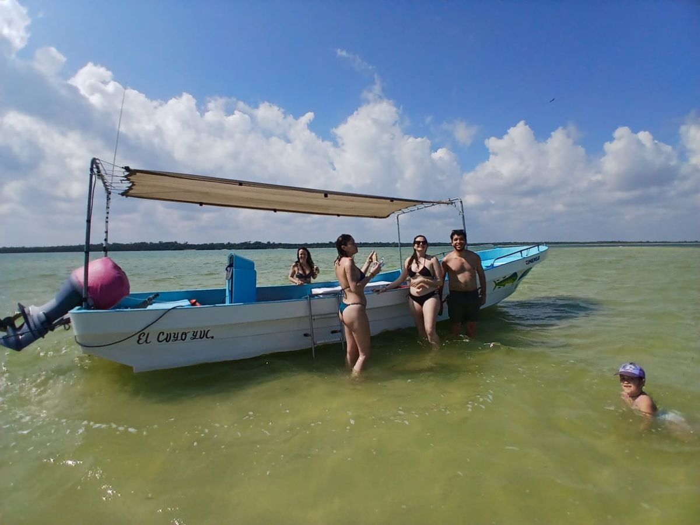

Tour en lancha por Ría Lagartos: baño maya y observación de aves | Explora El Cuyo Tours
Descubre la Reserva de la Biosfera Ría Lagartos en lancha desde la región de El Cuyo. Observación de aves, paisajes de manglar y experiencia de baño maya.

Un recorrido por la Reserva de la Biosfera Ría Lagartos
Navega por los canales y paisajes naturales de la Reserva de la Biosfera Ría Lagartos. Durante el paseo podrás conocer los manglares y la riqueza natural de esta región de Yucatán.
Observación de aves y baño maya
Conoce diferentes aves que habitan o visitan la región, como flamencos, pelícanos, cormoranes y garzas. Los avistamientos dependen de la temporada y las condiciones naturales. La experiencia también contempla el tradicional baño maya con arcilla natural.
Itinerario aproximado
- Salida en lancha y recorrido por los canales de la reserva.
- Observación e interpretación de aves y paisajes naturales.
- Parada para la experiencia de baño maya con arcilla natural.
- Regreso al punto de salida.
Qué incluye
- Botellas de agua purificada.
- Frutas del día.
- Experiencia de baño maya con arcilla natural.
Qué no incluye o debes considerar
- Cualquier servicio o consumo no mencionado expresamente en esta ficha.
- Los avistamientos de especies específicas no están garantizados.
Los horarios y tiempos de recorrido son aproximados cuando así se indica y pueden cambiar por clima, navegación, condiciones naturales y operación del proveedor. Confirma los detalles y disponibilidad antes de reservar.
Consultar disponibilidad por WhatsApp Volver a Explora El Cuyo Tours